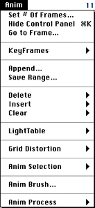
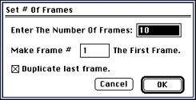
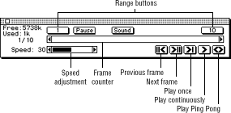
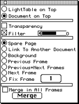

This document discusses the Anim menu shown in Figure 1.

Figure 1: Anim menu.
Anim menu commands discussed in this section
All commands listed on the Anim menu are specific to 3DO Animator and are
not discussed in the Studio/32 manual.
Set # of Frames command
When you select Set # of Frames, 3DO Animator displays the Set # of Frames
dialog.

Figure 2: Set # of Frames dialog.
The table below discussed the options available in the dialog.
Table 1: Set # of Frames dialog options.
--------------------------------------------------------
Option |Description
--------------------------------------------------------
Enter The |Specifies the number of frames for the
Number of |animation. The maximum allowed in a
Frames |single animation is 999.
--------------------------------------------------------
Make Number... |Specifies a different first frame than
The First Frame|frame 1. 3DO Animator reshuffles the
|frames to renumber them. This is useful
|when you are combining animations.
--------------------------------------------------------
Duplicate last |If the Duplicate last frame box is
frame |checked, 3DO Animator makes every frame
|you entered in the top box an exact copy
|of the last frame of the animation. This
|is useful when you want a single picture
|to be the background for a range of
|frames, or even for the whole animation.
|Open the picture and set the number of
|frames, and check the "Duplicate last
|frame" box. 3DO Animator creates the
|number of frames you specified, each a
|duplicate of the picture.
--------------------------------------------------------
Show/Hide Control Panel command
When you select Show/Hide Control Panel, 3DO Animator displays (or hides)
the Anim control panel.

Figure 3: Anim control panel.
The control panel presents frame counter and speed adjustment scroll bars,
a dynamic display of current memory, Pause and Sound options, range
buttons, and five control buttons for working through and playing your
animation.
Keyboard Shortcuts
For a summary of the keyboard shortcuts you can use with these controls,
see the quick refererence card that is part of you documentation set.
Anim control Panel options
Disk space indicator
The disk space indicator in the upper-left corner of the panel displays
the amount of disk space still available and gives an estimate of the disk
space needed to save the animation.
Frame counter
Displays the current frame's number and the total number of frames in the
animation. To move to a specific frame, drag the scroll bar or click the
Next Frame or Previous Frame button.
If you are working with key frames and the current frame is a key frame, a
small key is displayed between the number and the scroll bar. In that
case, you can advance from one key frame to the next by using
Option-clicks.
Speed adjustment bar
Displays the speed at which the current animation will play in frames per
second (fps). The default setting is 30 fps. The default range is between
1 and 60 fps. To change the playback speed of an animation (while the
animation is not playing), drag the slider to the left (decrease)
or to the right (increase).
To set the fastest possible playback speed for your animation, drag the
sliding control to the far right so that black fills the scroll bar. This
sets the playback speed at infinity.
To change the playback speed of the animation while it is running, press
the + or - key on the numeric keypad to increase or decrease the speed of
the animation by one frame per second each time you press the key. Hold
either key down for continuous change in that direction.
Pause button
Lets you adjust the length of time a selected frame is on screen as your
animation plays. Settings made through the Pause control override settings
in the Speed control.
Move to the frame you want to pause on, and click the Pause button. In the
Pause On Frame dialog, enter the number of seconds you want that frame to
appear on the screen and Click OK. The number you entered appears in the
control panel next to the Pause button.
You can set a pause on as many frames as you like, but you must set it one
frame at a time.
Sound button
Lets you add sounds to an animation. Sound is linked to a specific frame
and plays as the frame plays. You can add sounds one at a time to as many
frames as you like (one sound per frame), however, many sounds slow down
the playback speed.
Sounds with a short play period (large files) work best. Sustained sounds,
or sounds on several consecutive frames, tend to get clipped and distorted
when played back.
Range buttons
If you click one of the Range buttons, 3DO Animator displays the Set Frame
Range dialog. A range can be any contiguous number of frames. Enter
starting and ending frame numbers when you want to work on just a range of
frames or when you want to save a range of frames (see the description of
the Save Range command later in this chapter).
When you enter a range of frames, all animation playback commands in the
Anim control panel are affected. Play Once, Play Continuously, and Play
Ping Pong will work only on the range of frames entered in the boxes.
Previous frame button (Command-2)
Click to move backward one frame. If the current frame is the first frame
in the sequence, this button moves the animation to the last frame.
Next frame button (Command - 3)
Click to move forward one frame. If the current frame is the last frame in
the sequence, this button moves the animation to the first frame.
Play once button (Command - 4)
Click to play through an animation sequence one time (at the speed set in
the frame counter), from frame 1 to the last frame. Option-click takes key
frames into account-that is, it tries to complete a sequence in the
specified time by skipping from one key frame to the next if possible.
Play Continuously button (Command - 5)
Click to play an animation sequence continuously at the speed set in the
frame counter. Press any key or the mouse button to stop.
Play Ping Pong button (Command - 6)
Click to play an animation sequence continuously, but the button plays the
sequence forward, then backward, then forward, and so on. Press any key or
the mouse button to stop.
Go to Frame command
Prompts you for the frame you want to reach.
Key Frames command
When an artist creates an animation, only the key frames contain full
information about the picture. Other frames only know about the
differences.
The submenu of the Key Frames command allows you to access key frames
directly without going through intermediate frames.The following commands
are available.
Set Current As Key Frame
Saves the full image for the current frame and defines it as a key
frame.
Set Key Frames
Sets key frames at regular intervals in the animation.
Cancel Current Key Frame
If you select this command, the current frame won't be saved as a full
image any more.
Cancel All Key Frames
Removes all key frame markings.
Append command
When you select Append, 3DO Animator displays the standard file selection
dialog, with a Picture Preview window for PICT or VDAN files.
Choose a file and click Open to add that file to the end (after the final
frame) of the current animation. You can only append a PICT or VDAN file,
and it must be the same size as or smaller (in total horizontal or
vertical dimensions) than the file you're appending it to. If you try to
add a larger file, an error message is displayed.
Save Range command
When you select Save Range, 3DO Animator lets you cut large animations
into smaller pieces and use the pieces in other animations. It displays
the standard Save As dialog but saves only the current range of frames
from the current animation.
Before choosing this command, you must set the range using the Set Frame
Range dialog, which appears when you click one of the range buttons in the
Anim control panel.
Delete command
When you select Save Range, 3DO Animator displays a submenu for deleting
frames from your animation.
Caution: You can't choose Undo after using one of the Delete
commands. Before you choose one of these options, make sure that you want
to delete-that is, remove a frame or frames from the animation.
The following commands are available:
Current Frame
Deletes the current frame and makes the following frame the current frame
unless you're at the last frame.
Frames...
Displays the Delete Frame dialog, which lets you specify the range of
frames you want to delete. Click OK to delete the specified frames from
the sequence.
All Frames
Deletes all the frames in the animation sequence and leaves the current
frame as your document.
Insert command
One Frame
Adds a frame after the current frame and copies the contents of the
current frame to it.
Frames...
Displays the Insert Frame dialog. Enter the number of frames you want to
add to the animation sequence (after the current frame), and click OK.
Check the Duplicate Current Frame option if you want the frames you're
inserting to be copies of the current frame. 3DO Animator inserts blank
frames otherwise.
Clear command
When you select Clear, 3DO Animator presents a submenu for clearing frames
and filling them with the background color.
Caution: You can't choose Undo after using one of the Clear
commands. Before you choose one of these options, make sure that you want
to clear.
The following commands are available:
Current Frame
Clears the current frame.
Frames...
Displays the Clear Frames dialog, which lets you enter the range of frames
you want to Clear. Click OK to clear those frames from your document.
All Frames
Clears all the frames in the current document.
Light Table command
Provides a draft page with additional functionality for each frame. When
you select Show The Light Table Document, the light table dialog appears.
Figure 4: Light Table dialog with light table on top.
The options available in the Light Table dialog when the light table is on
top (the default) are listed in below.
The following commands are available when the light table is on top:
Light Table on Top
Brings the light table to the top.
Document on Top
Brings the source document to the top.
Transparency
Makes the background of the light table transparent. As a result, the
document is always fully visible even if the light table is on top.
Filter
Makes the background color translucent, like colored glass. This makes it
easy to distinguish what you draw from the art underneath.
Spare Page
Lets you copy information from the light table onto one draft page.
Link to Another Document
Lets you create an empty animation that contains exactly what you draw on
the light table and then save it as an animation sequence. Also allows you
to use an opened animation and sync the frames to another document.
With the document on top, you have a number of additional options, shown
in Figure 5.

Figure 5: Light table dialog options (document) table on
top).
The additional options available in the Light Table dialog when the
document is on top are listed below.
Background
Prompts for a PICT file to be used as the background for the light table.
The PICT file is scaled to fit the document and remapped to use the colors
of the document. You can then draw on top of that background image.
Previous Frame
Goes to the specified frame in the light table.
Fix Frame
Prompts for a frame number and goes to that frame.
Merge in All Frames
Option for the Merge button.
Release the Light Table
Discards all information in the light table.
Grid Distortion command
When you select Grid Distortion, 3DO Animator presents a submenu that lets
you create an animation by distorting a selected shape over a specified
number of frames.The following commands are available in the submenu.
Start the Grid Distortion
Starts the transformation process.
Abort the Grid Distortion
Terminates the transformation process
Show/Hide the Grid Distortion Options
Displays the control panel for the distortion options if it's hidden;
hides it if it's showing.
Anim Selection command
When you select Anim Selection, 3DO Animator presents a submenu which
offers the following options:
Lets you add transition effects to an animation. The effect you choose
takes place in a selected area between a starting frame and an ending
frame, which you specify in the Transition Effects dialog. An effect can
be added to a stationary selection as well as to a selection you have
moved with Anim Move or Anim 3D. You can transform any selection or
selected area of the screen with a transition effect.
Gives you a simple way to create horizontal and/or vertical movements for
the objects you create. You set a beginning point and an end point for the
object you want to move. 3DO Animator draws the movement of the object as
a straight line between the two points over the number of frames you set.
Lets you pick up part or all of an animation. You can save an animated
selection (using the Save As Selection command) and use your creation as
animated clip art in other animations.
Use one of the Selection tools to surround the selection before choosing
this command. If the selection changes location during the animation,
surround the entire animated area with the selection Marquee.
When you select Process, 3DO Animator displays a submenu lets you choose
the Edge Detection command. This command starts an edge detection process
on all frames in an animation. As a result, you will have a document that,
in general, contains clean outlines. The command is only valid for 8-bit
documents. You can't undo the results of the command.